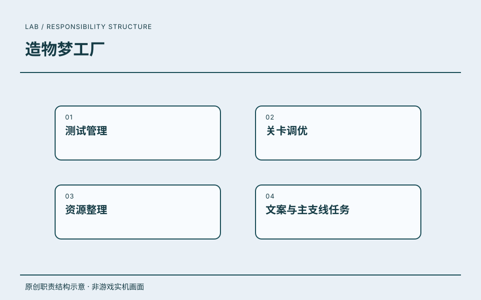

09 / 质量与内容实验室 · PROJECT 02
造物梦工厂.
以 QA 经理 / 游戏策划身份参与；从同阶段的测试、关卡、资源和任务职责说明工作价值，具体项目分工不作未经确认的拆分。
任职角色沿用履历记录；具体贡献按项目资料区分，共同职责不逐项归为单个项目的独立成果。
MY WORK / DESIGN VALUE
这段任职的工作与价值
本项目参与记录已确认，以下是公司任职共同职责，未逐项确认本项目专属分工。以上为公司任职共同职责，未逐项确认在两款项目中的专属分工；不新增测试效率或质量提升数字。
- 01
QA 管理与关卡体验结合
- 具体工作
- 以 QA 经理 / 游戏策划身份承担测试管理和关卡调优，参与《纸片少女》《造物梦工厂》。
- 工作价值
- 形成质量检查与玩法体验相结合的工作基础，能够从问题定位进入设计调整。
- 02
内容与资源的策划工作
- 具体工作
- 承担资源整理、文案和主支线任务相关工作，兼顾内容与质量两个方向。
- 工作价值
- 说明从测试岗位向策划工作延伸的经历，以及对内容、资源和任务结构的关注。
职责依据本人履历与确认；原图补充设计证据，经营结果另行说明来源与口径。
查看完整公司经历 ↗
QA 经理 / 游戏策划
以 QA 经理 / 游戏策划身份参与；从同阶段的测试、关卡、资源和任务职责说明工作价值，具体项目分工不作未经确认的拆分。
工作职责
- 01测试管理
- 02关卡调优
- 03资源整理
- 04文案与主支线任务
参与项目
项目记录
《造物梦工厂》列于这段任职经历中。
- 任职公司
- 北京冰狮科技有限公司
- 角色
- QA 经理 / 游戏策划
- 时间
- 2017.03—2018.01
任职、角色与职责依据本人履历及确认。图示是本站原创的职责结构表达。